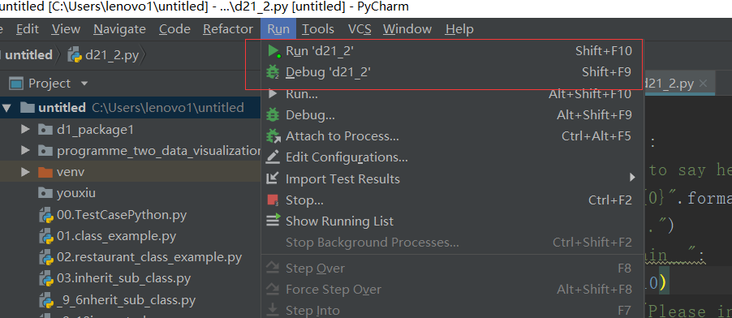
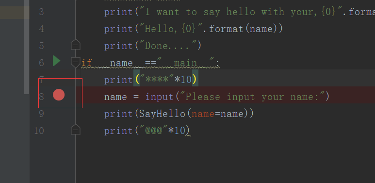
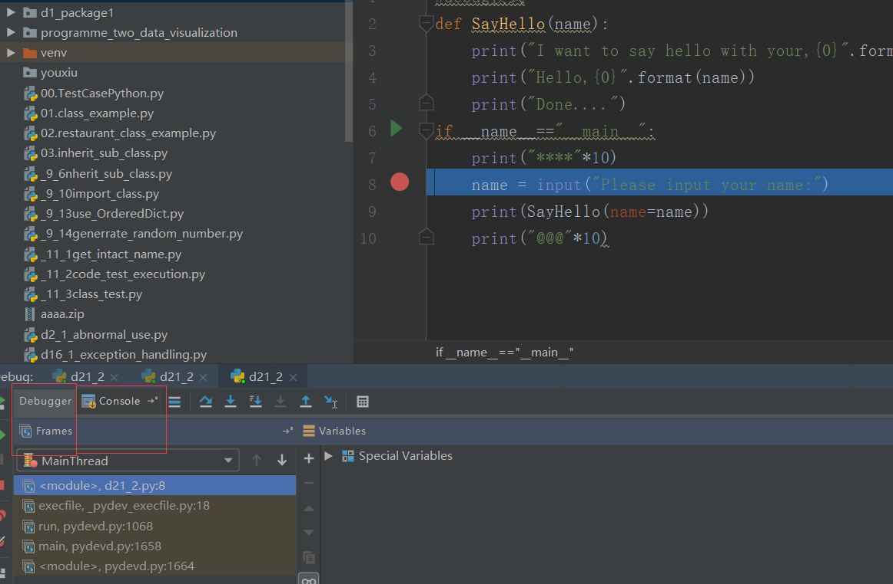
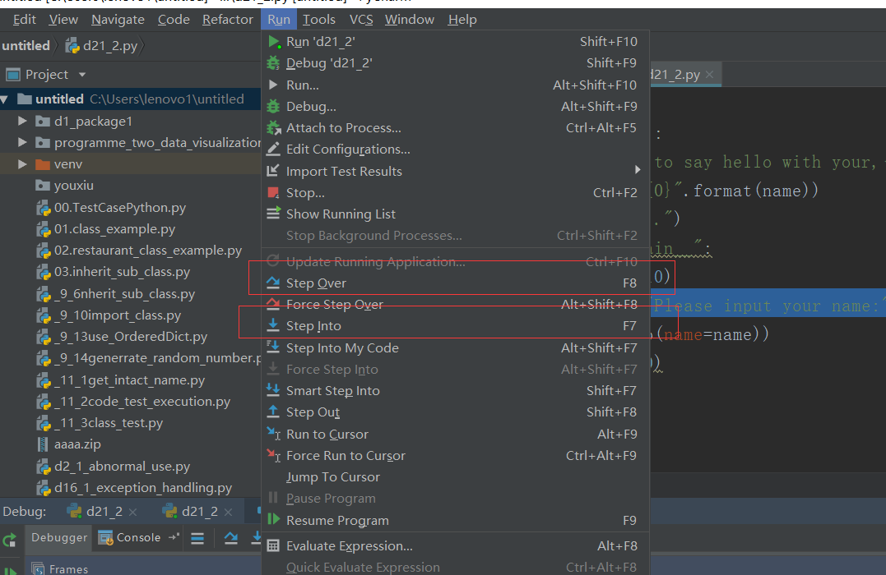
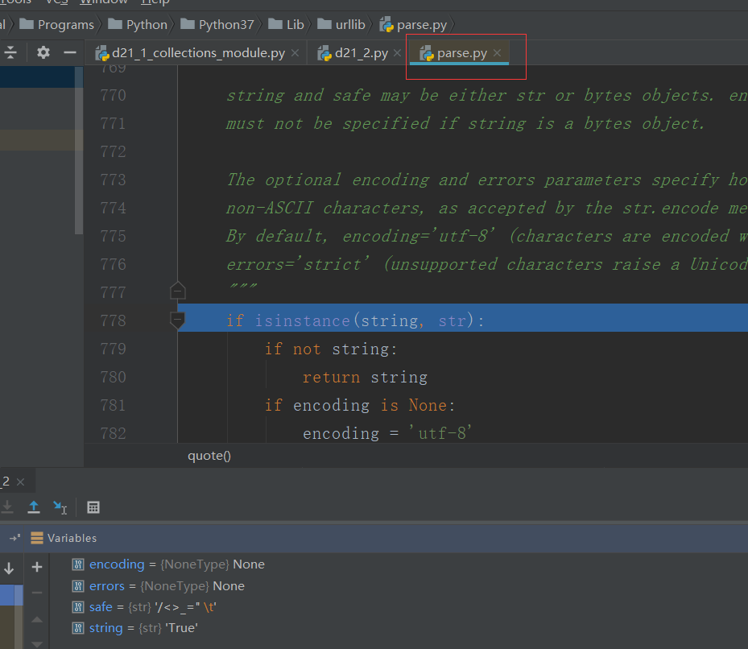
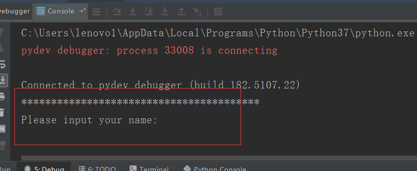
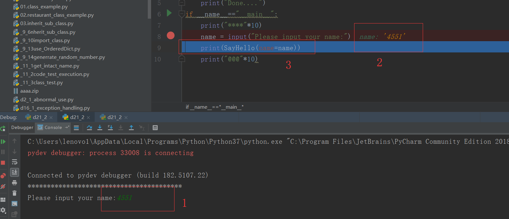
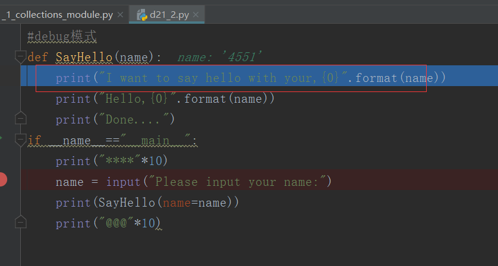

一、调试技术
（1）调试流程：单元测试->集成测试->交测试部
（2）分类：i.静态调试（说白了就是看代码，看看有没有错）；ii.动态测试
1.pdb调试
相关连接：https://blog.csdn.net/xc_zhou/article/details/80921483
作者：周小董
2.pycharm调试
含有两种模式:（1）run/debug模式
断点：程序的某一行，程序在debug模式下，进行调试
例子：
#debug模式
def SayHello(name):
print("I want to say hello with your,{0}".format(name))
print("Hello,{0}".format(name))
print("Done....")
if __name__=="__main__":
print("****"*10)
name = input("Please input your name:")
print(SayHello(name=name))
print("@@@"*10)
下面将进行调试：
（1）pycharm有两个按钮run和debug
run是直接运行我们的代码，debug就是调试我们的代码

（2）我们要调试某一行，那就在那一行的行号位置单击一下，代表的意思就是我们如果点击debug，程序就会执行到这个位置暂停。

（3）点击debug按钮之后，在界面下面会跳出来debugger小窗，这里会是调试过程中显示程序内部变量给我们看的地方。

（4）我们暂停到这一行，还要接着执行下去，有两种按钮step over和step into。step over是执行这一行到下一行停止的意思。step into也是执行这一行到下一行停止的意思，区别在于，得看这一行是不是内含代码了。

（5）我们举个例子
我们点击step into，就会调到这个界面，意思就是看一下我们这个input语句是怎么运行的，我们知道这一行肯定没错，因此看它也没用。

（6）因此我们点击step out，跳出这个界面回到我们刚才的界面我们点击step over，我们执行这条语句就行，不用进去看代码

（7）我随笔输入了几个字母如标示1，然后刚才那条语句后面给我显示出来了标示2（debugger中也显示了，我没截图而已，从哪里看都行），然后程序向下走了一步。

（8）这时候我们点击step into，（之所以不点击是step over,是因为这条语句，里面是一个函数，我们想看看它具体怎么执行的，有没有什么错误。当然点击step over也行，他就直接把函数给执行完了，但是我们的目的就是要看看程序具体如何执行，所以才进去），看一下，果然不出所料所料，程序进入到函数里面去了，后面就是一步一步调试了。

3.单元测试
推荐文档：
https://wiki.python.org/moin/PyUnit
二、源码：
d21_2_debug_and_unit_test
地址：https://github.com/ruigege66/Python_learning/blob/master/d21_2_debug_and_unit_test
2.CSDN：https://blog.csdn.net/weixin_44630050（心悦君兮君不知-睿）
3.博客园：https://www.cnblogs.com/ruigege0000/
4.欢迎关注微信公众号：傅里叶变换，后台回复”礼包“，获取大数据学习资料